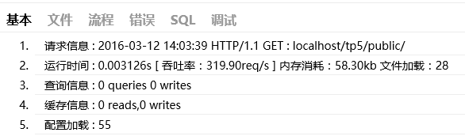
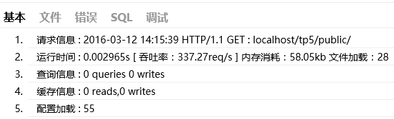
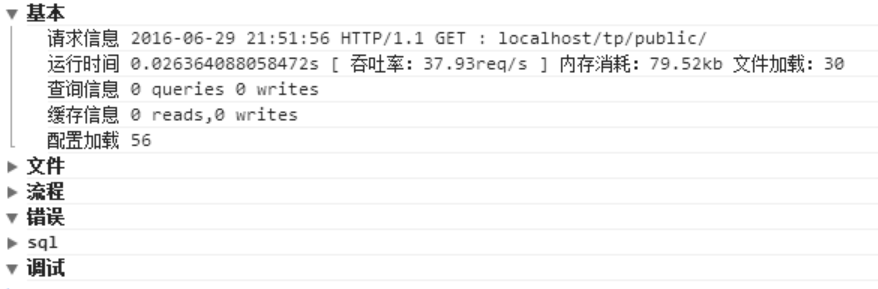

调试模式并不能完全满足我们调试的需要，有时候我们需要手动的输出一些调试信息。除了本身可以借助一些开发工具进行调试外，ThinkPHP还提供了一些内置的调试工具和函数。例如，Trace调试功能就是ThinkPHP提供给开发人员的一个用于开发调试的辅助工具。可以实时显示当前页面的操作的请求信息、运行情况、SQL执行、错误提示等，并支持自定义显示，5.0版本的Trace调试支持没有页面输出的操作调试。
Trace调试功能对调试模式和部署模式都有效，可以单独开启和关闭。
只是在部署模式下面，显示的调试信息没有调试模式完整，通常我们建议Trace配合调试模式一起使用。
默认关闭Trace调试功能，要开启Trace调试功能，只需要配置下面参数：
// 开启应用Trace调试
'app_trace' => true,如果定义了环境变量
app_trace，那么以环境变量配置为准。
要开启页面Trace功能，需要配置trace参数为：
// Trace信息
'trace' => [
//支持Html,Console
'type' => 'html',
] 设置后并且你的页面有输出的话，页面右下角会显示ThinkPHP的LOGO：
我们看到的LOGO后面的数字就是当前页面的执行时间（单位是秒） 点击该图标后，会展开详细的Trace信息，如图：

Trace框架有6个选项卡，分别是基本、文件、流程、错误、SQL和调试，点击不同的选项卡会切换到不同的Trace信息窗口。
| 选项卡 | 描述 |
|---|---|
| 基本 | 当前页面的基本摘要信息，例如执行时间、内存开销、文件加载数、查询次数等等 |
| 文件 | 详细列出当前页面执行过程中加载的文件及其大小 |
| 流程 | 会列出当前页面执行到的行为和相关流程 |
| 错误 | 当前页面执行过程中的一些错误信息，包括警告错误 |
| SQL | 当前页面执行到的SQL语句信息 |
| 调试 | 开发人员在程序中进行的调试输出 |
Trace的选项卡是可以定制和扩展的，默认的配置为：
// 显示Trace信息
'trace' =>[
'type' => 'Html',
'trace_tabs' => [
'base'=>'基本',
'file'=>'文件',
'info'=>'流程',
'error|notice'=>'错误',
'sql'=>'SQL',
'debug|log'=>'调试'
]
]也就是我们看到的默认情况下显示的选项卡，如果你希望增加新的选项卡：用户，则可以修改配置如下：
// 显示Trace信息
'trace' =>[
'type' => 'Html',
'trace_tabs' => [
'base'=>'基本',
'file'=>'文件',
'info'=>'流程',
'error'=>'错误',
'sql'=>'SQL',
'debug'=>'调试',
'user'=>'用户'
]
]也可以把某几个选项卡合并，例如：
// 显示Trace信息
'trace' =>[
'type' => 'Html',
'trace_tabs' => [
'base'=>'基本',
'file'=>'文件',
'error|notice'=>'错误',
'sql'=>'SQL',
'debug|log|info'=>'调试',
]
]更改后的Trace显示效果如图：

trace功能支持在浏览器的console直接输出，这样可以方便没有页面输出的操作功能调试，只需要设置：
// Trace信息
'trace' =>[
// 使用浏览器console输出trace信息
'type' => 'console',
] 运行后打开浏览器的console控制台可以看到如图所示的信息：

浏览器Trace输出仍然支持trace_tabs设置。